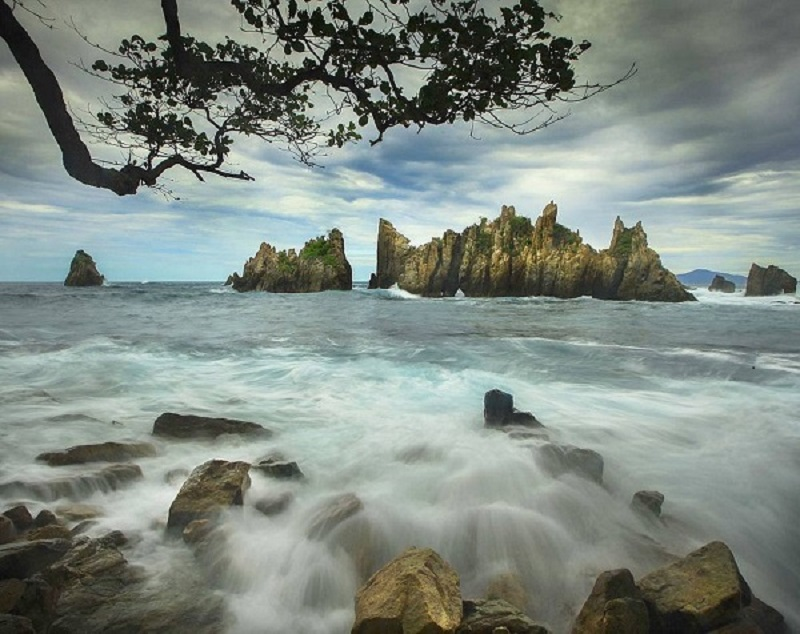
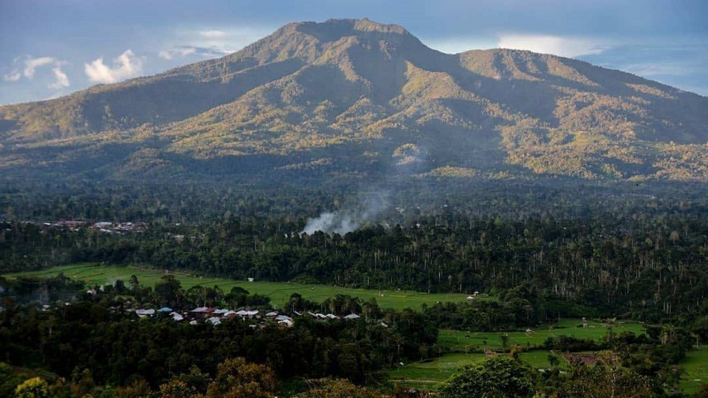
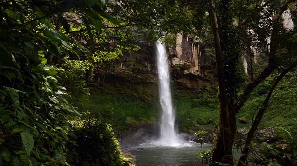
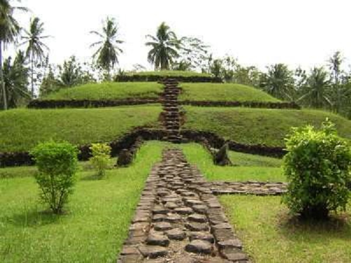

Pantai Gigi Hiu

Penyematan nama “Gigi Hiu” berdasarkan keberadaan batuan karang yang bentuknya tajam layaknya deretan gigi ikan hiu.Ternyata pantai ini bukan hanya memiliki nama Pantai Gigi Hiu saja, nama lain dari pantai indah ini ialah Pantai Batu Layar.
Hal tersebut berdasarkan pada keberadaan sebuah batu yang mengambang layaknya sebuah perahu layar.
Kemunculan batu karang yang ada di Pantai Gigi Hiu masih menyimpan misteri dan sejarahnya tersendiri. Namun, yang pasti panorama tersebut menjadi magnet bagi para wisatawan.Lokasi dan alamat Pantai Gigi Hiu terletak di Desa Kelumbayan, Kecamatan Kelumbayan, Kabupaten Tanggamus, Lampung.
Gunug Pesagi

Gunung Pesagi adalah gunung tak aktif salah satu dari 5 Gunung bersejarah yang ada di provinsi Lampung, Indonesia.
Dari kelima gunung tersebut, Gunung Pesagi adalah gunung yang mempunyai puncak paling tertinggi yang ada di lemah Lampung (tanah Lampung).Ketinggian puncak dari Gunung Pesagi ini memiliki dua puncak tertinggi, puncak tertinggi pertama disebut Pesagi lunik (kecil) sedangkan puncak tertinggi kedua adalah Pesagi balak (besar), ketinggian dari pesagi lunik (kecil) 2.262 MDPL untuk ketinggian Pesagi balak (besar) mencapai 3.221 MDPL.
Taman Nasional Way Kambas
Taman Nasional Way Kambas (TNWK) adalah taman nasional perlindungan gajah yang terletak di daerah Lampung tepatnya di Kecamatan Labuhan Ratu, Lampung Timur, Indonesia. Selain di Way Kambas, sekolah gajah (Pusat Latihan Gajah) juga bisa ditemui di Minas, Riau. Gajah Sumatra (Elephas maximus sumatranus) yang hidup di kawasan ini semakin berkurang jumlahnya.
Taman Nasional Way Kambas berdiri pada tahun 1985 merupakan sekolah gajah pertama di Indonesia. Dengan nama awal Pusat Latihan Gajah (PLG) namun semenjak beberapa tahun terakhir ini namanya berubah menjadi Pusat Konservasi Gajah (PKG) yang diharapkan mampu menjadi pusat konservasi gajah dalam penjinakan, pelatihan, perkembangbiakan dan konservasi. Hingga sekarang PKG ini telah melatih sekitar 300 ekor gajah yang sudah disebar ke seluruh penjuru Tanah Air. Di Way Kambas juga tedapat International Rhino Foundation yang bertugas menjaga spesies badak agar tidak terancam punah.
Sejarah dan Status Kawasan
Sejarah Taman Nasional Way Kambas adalah satu dari dua kawasan konservasi yang berbentuk taman nasional di Propinsi Lampung selain Taman Nasional Bukit Barisan Selatan (TNBBS). Yang ditetapkan melalui Surat Keputusan Menteri Kehutanan Nomor 670/Kpts-II/1999 tanggal 26 Agustus 1999, kawasan TNWK mempunyai luas lebih kurang 125,631.31 ha.
Secara gaeografis Taman Nasional Way Kambas terletak antara 40°37’ – 50°16’ Lintang Selatan dan antara 105°33’ – 105°54’ Bujur Timur. Berada di bagian tenggara Pulau Sumatera di wilayah Propinsi Lampung. Pada tahun 1924 kawasan hutan Way Kambas dan Cabang disisihkan sebagai daerah hutan lindung, bersama-sama dengan beberapa daerah hutan yang tergabung didalamnya.
Berdasarkan sejarah Pendirian kawasan pelestarian alam Way Kambas dimulai sejak tahun 1936 oleh Resident Lampung, Mr. Rookmaker, dan disusul dengan Surat Keputusan Gubernur Belanda tanggal 26 Januari 1937 Stbl 1937 Nomor 38.
Pada tahun 1978 Suaka Margasatwa Way Kambas diubah menjadi Kawasan Pelestarian Alam (KPA) oleh Menteri Pertanian dengan Surat Keputusan Menteri Pertanian Nomor 429/Kpts-7/1978 tanggal 10 Juli 1978 dan dikelola oleh Sub Balai Kawasan Pelestarian Alam (SBKPA).
Kawasan Pelestarian Alam diubah menjadi Kawasan Konservasi Sumber Daya Alam (KSDA) yang dikelola oleh SBKSDA dengan luas 130,000 ha. Pada tahun 1985 dengan Surat Keputusan Menteri Kehutanan Nomor 177/Kpts-II/1985 tanggal 12 Oktober 1985. Pada tanggal 1 April 1989 bertepatan dengan Pekan Konservasi Nasional di Kaliurang Yogyakarta, dideklarasikan sebagai Kawasan Taman Nasional Way Kambas berdasarkan Surat Keputusan Menteri Kehutanan Nomor 444/Menhut-II/1989 tanggal 1 April 1989 dengan luas 130,000 ha.
Kemudian pada tahun 1991 atas dasar Surat Keputusan Menteri Kehutanan nomor 144/Kpts/II/1991 tanggal 13 Maret 1991 dinyatakan sebagai Taman Nasional Way Kambas, dimana pengelolaannya oleh Sub Balai Konservasi Sumber Daya Alam Way Kambas yang bertanggungjawab langsung kepada Balai Konsevasi Sumber Daya Alam II Tanjung Karang. Dengan Surat Keputusan Menteri Kehutanan Nomor 185/Kpts-II/1997 tanggal 13 maret 1997 dimana Sub Balai Konsevasi Sumber Daya Alam Way Kambas dinyatakan sebagai Balai Taman Nasional Way Kambas.[3]
Sejarah Alasan ditetapkannya kawasan tersebut sebagai kawasan pelestarian alam, adalah untuk melindungi kawasan yang kaya akan berbagai satwa liar, diantaranya adalah tapir (Tapirus indicus), Gajah Sumatera (Elephas maximus sumatranus), enam jenis primata, rusa sambar (Cervus unicolor), kijang (Muntiacus muntjak), harimau Sumatera (Panthera tigris), beruang madu.[4]
Bahkan saat ini Taman Nasional Way Kambas ditetapkan sebagai kawasan Taman Warisan ASEAN (ASEAN Heritage Park). Penetapan ini menjadikan TNWK sebagai Taman Warisan ASEAN ke-4 di Indonesia atau ke-36 di Asia Tenggara.
Air Terjun Putri Malu

Salah satu air terjun terindah di Lampung adalah Air terjun Putri Malu. Air terjun dengan ketinggian kurang lebih 80 meter ini bagaikan surga tersembunyi di tengah hutan belantara Kabupaten Way Kanan.
Nama Air Terjun Putri Malu di Kabupaten Way Kanan Lampung tak hanya terkenal di masyarakat Kabupaten Way Kanan saja. Masyarakat Lampung juga telah banyak yang mengenal air terjun dengan panorama yang menakjubkan ini. Bahkan banyak yang menilai bahwa air terjun ini merupakan yang tertinggi di Lampung.
Air Terjun Putri Malu Berlokasi di kawasan hutan register 24, Kecamatan Banjit, Kabupaten Way Kanan. Letaknya memang jauh dari permukiman masyarakat, sehingga keindahan dan kealamian air terjun ini masih sangat terjaga.
Dari Ibukota Kota Bandar Lampung, untuk menuju lokasi ini jarak yang harus ditempuh adalah sejauh 188,1 km. Waktu tempuh normalnya sekitar 4 jam setengah. Untuk transportasi bisa menggunakan kendaraan pribadi roda empat maupun roda dua. Sedangkan untuk transportasi umum bisa menggunakan bus atau travel tujuan Baradatu atau Blambangan Umpu.
Selanjutnya, untuk menuju objek wisata ini, dari Jalan Lintas Tengah Sumatera anda bisa berhenti di SMUN Baradatu (Kecamatan Baradatu), nah setelah itu ada jalan masuk ke lokasi wisata ini. Jaraknya dari sana sekitar 46 km.
Desa terakhir sebelum sampai ke air terjun ini bernama Desa Juku Batu. Dari Juku Batu ini perjalanan dilanjutakan dengan kendaraan motor, bisa menggunakan ojek dari warga sekitar. Namun jika membawa motor pribadi dan mampu mengendarai di medan yang susah, anda bisa sampai ke lokasi tanpa harus membayar tukang ojek.
Untuk kendaraan roda empat memang belum bisa menjangkau langsung sampai ke lokasi ini. Kondisi jalannya masih sempit dan beberapa jembatan tidak bisa dilalui oleh kendaraan roda empat.
Beberapa meter sebelum samapi, pengunjung akan melewati jalan setapak tanah. Jika hujan kondisi tanah sedikit licin. Namun selama berjalan kaki ini pengunjung akan diberi suguhan pemandangan pepohonan dan semak bernuansa hutan belantara.
Perjalanan menuju lokasi ini akan terbayarkan ketika sampai di air terjun yang memiliki debit air yang besar ini. Suasana hening nan asri akan menyambut pengunjung. Air terjun ini dikelilingi oleh pepohonan besar.
Air di aliran air terjun ini masih bersih dan bening, hal ini karena tidak ada perkampungan di bagian atas air terjun ini. Air hanya akan sedikit keruh jika terjadi hujan di bagian hulu sumber airnya.
Air terjun putri malu juga dikelilingi oleh tebing berbatu yang tinggi sehingga menciptakan pemandagan yang apik. Pengujung bisa menikmati pemandangan dan juga mandi di bawah air terjun ini.
Di air Terjun Putri Malu, pengunjung juga bisa duduk sambil menikmati keindahan dan keasrian alam sekitar. Ada beberapa sudut yang bagus untuk mengambil gambar, dari arah datang dengan jarak sekitar 50 meter pengunjung bisa mengabadikan air terjun ini secara keseluruhan.
Karena lokasinya berada ditengah hutan, jadi belum terdapat penjual makanan di area ini. pengunjung bisa mempersiapkan bekal sebelum berkunjung ke lokasi ini agar nantinya bisa tetap nyaman saat menikmati pesona Air Terjun Putri Malu ini.
Selain membawa bekal makanan pengunjung juga disarankan untuk membawa ponco. Ini untuk berjaga-jaga jika terjadi hujan saat dilokasi. Hal ini karena lokasi air terjun yang jauh dengan pemukiman dan belum adanya gazebo serta srana lainnya.
Selain Air Terjun Putri Malu, Kabupaten Way Kanan masih menyimpan banyak destinasi air terjun lainnya. Secara keseluruhan ada banyak sekali tempat wisata air terjun di Lampung dengan keindahan dan karakteristik yang berbeda.
Taman Purbakala Pugung Raharjo

Situs kepurbakalaan Pugung Raharjo secara administratif berlokasi di Desa Pugung Raharjo, Kecamatan Sekampung Udik, Kabupaten Lampung Timur, Provinsi Lampung. Tepatnya pada koordinat 5° 18’ 54” LS dan 1105° 32’ 03” BT serta berada pada ketinggian 80 m dari permukaan laut.
Situs Pugung Raharjo ditemukan pada tahun 1957 oleh penduduk setempat yang terdiri atas warga transmigran sewaktu penebangan hutan untuk membuka lahan. Beberapa transmigran tersebut, yakni Barno Raharjo, Sardi, Karjo, Kodiran dan Sawal, melaporkan hasil penemuan kepada Dinas Purbakala. Salah satu dari temuan awal adalah arca yang dikenal sebagai arca Bodhisatwa, yang bercirikan masa pengaruh Hindu-Buddha.
Pengungkapan tradisi megalitik di Sumatera telah banyak dilakukan oleh para pakar, jauh sebelum Indonesia merdeka, antara lain Tombrink, Steinmetz, Ullman, Schnitger, Van der Hoop, dan Funke. Namun, Pugung Raharjo yang ditemukan oleh para transmigran ini, tidak dikenal oleh para peneliti tersebut.
Selang beberapa tahun sejak ditemukan, tepatnya pada tahun 1968, dilakukanlah penelitian awal oleh Lembaga Purbakala yang dipimpin oleh Drs. Buchori. Pada tahun 1973, Lembaga Purbakala dan Peninggalan Nasional bekerjasama dengan Pennsylvania Museum University, melakukan pencatatan dan pendokumentasian kepurbakalaan di Pugung Raharjo. Hasil penelitian tersebut dituangkan dalam Laporan Penelitian Sumatera.
Penelitian terus berlanjut, yakni pada tahun 1975, tim Soekatno T.W. mengadakan kegiatan pemetaan dan survey permukaan. Tahun 1977, Haris Sukendar mengadakan penelitian yang berhasil menemukan dan mengidentifikasi adanya sejumlah batu berlubang dan bergores beserta persebaran temuan. Pada tahun 1980 dilakukan ekskavasi, yang menghasilkan kesimpulan bahwa kompleks megalitik Pugung Raharjo memiliki luas sekitar 25 ha.
Pada tahun 1977/1978 hingga tahun 1983/1984 dilakukan pemugaran di situs Pugung Raharjo oleh Direktorat Jenderal Perlindungan dan Pembinaan Sejarah dan Purbakala melalui Proyek Pembinaan dan Pemeliharaan Peninggalan Sejarah dan Purbakala Lampung.
Ditinjau dari sisi kronologi, artefak, maupun fiturnya, situs Pugung Raharjo sangatlah unik, menarik, dan variatif. Tinggalan di situs ini secara kronologi begitu lengkap, mulai dari masa prasejarah, klasik (Hindu – Buddha), hingga masa Islam. Artefak yang ditemukan di situs ini antara lain keramik asing dari beberapa dinasti, keramik lokal, manik-manik, dolmen, menhir, pisau, mata tombak, batu berlubang, batu asahan, batu pipisan, kapak batu, batu trap punden, gelang perunggu, dan batu bergores. Adapun fitur yang ditemukan di situs Pugung Raharjo antara lain benteng dan parit artificial, punden berundak, batu berlubang, lumpang batu, batu bergores, batu kandang (batu mayat).